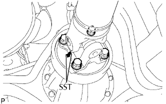
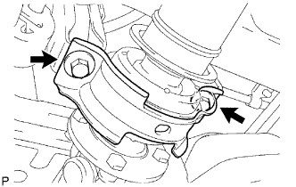
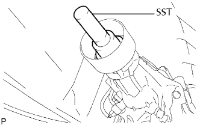

CỤM TRỤC CÁC ĐĂNG PHÍA SAU > THÁO |
| 1. THÁO TRỤC CÁC ĐĂNG VỚI VÒNG BI ĐỠ GIỮA |
|  |
Gióng thẳng các dấu ghi nhớ trên mặt bích trục các đăng và mặt bích của bộ vi sai.
Tháo 4 đai ốc, 4 bu lông, 4 vòng đệm và ngắt trục cácđăng ra.
|  |
Tháo 2 cặp bu lông và 2 vòng đệm của vòng bi đỡ giữa ra khỏi dầm ngang khung xe.
|  |
Kéo trục cácđăng ra.
Lắp SST vào vỏ mở rộng để tránh rò rỉ dầu.